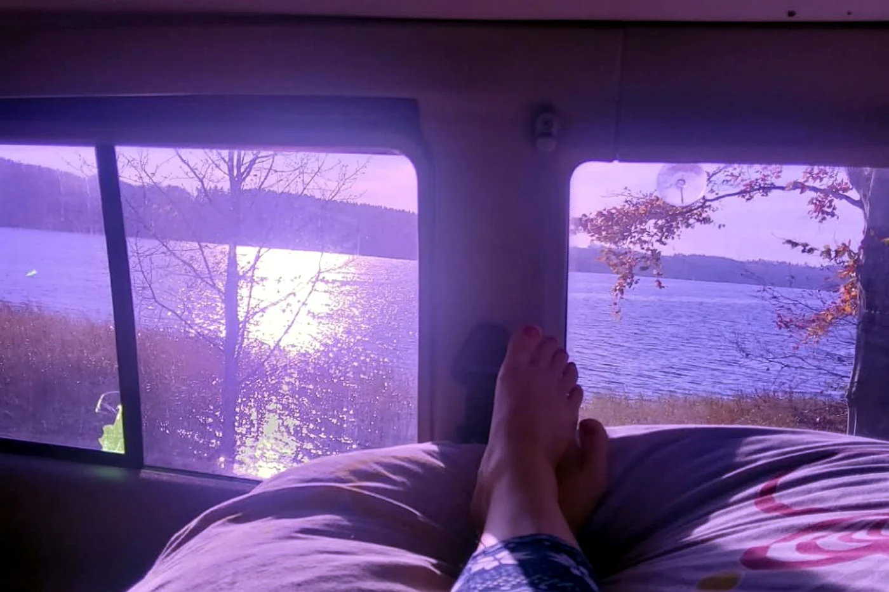
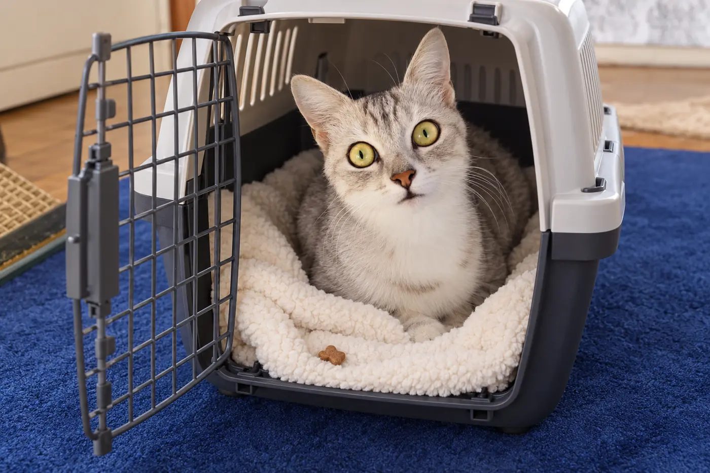

Cats in a Camper: How I Am Preparing Timmy and Susi for Travel

Hello, Justine from Tussy Van here! 💛
Anyone who meets my two cats notices one thing straight away: they are definitely curious. Timmy and Susi are about one year old. They are females and sisters from the same litter. Timmy has longer grey-and-white fur, while Susi is the short-haired white-and-grey sister. An open bag is inspected immediately, a new cardboard box is claimed within seconds, and the two of them could spend hours watching the world from the window. In theory, that sounds like the perfect starting point for two little travel companions, doesn't it?
Of course, it is not quite that simple. I do not want to put Timmy and Susi in the van one day and take them on a long trip without preparation. A change of place can be much more significant for cats than it is for us. New smells, engine noise, movement, unfamiliar people, dogs on the campsite and a different daily routine may be exciting, but they can also cause stress.
That is why I want to approach this slowly and honestly. My goal is not to turn them into “Instagram camping cats” at any cost. I want to find out whether they can genuinely feel comfortable in the camper. Timmy and Susi set the pace. If either sister clearly shows me that travelling is not for her, that is an answer I will respect.
Preparation first, adventure second
Before our first proper trip, I will book a health check with the vet. I want to make sure Timmy and Susi are physically fit for car journeys, find out which vaccinations and parasite protection are appropriate for our destinations, and discuss what to do if either cat becomes travel sick. I would never give medication or sedatives without veterinary advice. If a cat drools heavily, vomits or panics in the car, that needs to be discussed with a vet.
Travelling abroad also means carrying the right documents. Within the EU, cats generally need a valid EU pet passport, a valid rabies vaccination and clear identification with a microchip. For a first rabies vaccination, the chip must already have been implanted; as a rule, there is also a waiting period of at least 21 days before the vaccination is accepted for travel. The chip should not only be implanted but also registered in a pet database with my current contact details. Before every border crossing, I check the rules of the destination country and the requirements for returning home, especially when travelling outside the EU.
My document folder will therefore contain:
- EU pet passports and vaccination records
- microchip numbers and registration details
- contact details for my regular veterinary practice
- addresses of vets or emergency clinics near our destination
- information about known illnesses, allergies and medication
- recent photographs of both cats for emergencies
Step 1: Making the carrier a favourite place

The preparation starts at home, not in the van. Many cats only see their carrier when it is time to visit the vet. It comes out of storage, the cat is put inside, and after the appointment it disappears again. The carrier can quickly become a warning signal.
In our home, the carriers will therefore stay open and accessible. Ideally, each cat gets her own sturdy carrier with a familiar blanket. Treats, toys or part of their daily food ration will make the space more appealing. At first, it is enough for a cat to look at or sniff the carrier. Later, I will reward her for stepping inside, sitting in it and eventually remaining relaxed for a moment with the door almost closed.
I will not force anything or push the cats inside. I would rather practise for two or three minutes each day and stop after a positive moment. Only when the open carrier has become completely normal will I close the door for a few seconds, open it again and extend the time very gradually.
For journeys, I plan to use two separate carriers of an appropriate size. Timmy and Susi are littermates and often sleep curled up together at home. Even closely bonded sisters can react differently under stress, however. Separate carriers give each cat a protected space and prevent one restless cat from putting additional pressure on the other.
Step 2: Practising with a harness and lead without rushing
A harness is not a substitute for a carrier while the vehicle is moving. It may, however, be useful later on a safe pitch. I therefore want to introduce Timmy and Susi to well-fitting, escape-resistant cat harnesses inside the flat first.
At the beginning, the harness simply lies near their sleeping place. Then it briefly touches the back; later, it is put on for a few seconds. Only when the cat moves, eats and plays normally while wearing it will I add a lightweight lead. Pulling or dragging would be completely wrong. A cat does not automatically walk to heel like a dog, and she does not have to.
Whether Timmy and Susi will eventually enjoy going outside remains to be seen. Perhaps they will like a short, quiet exploration. Perhaps they will feel much happier behind a secured window. Both are perfectly fine. Outdoors, the harness will only be used under supervision; I would never tether a cat and leave her alone.
Step 3: Exploring the parked van
Once the carriers and harnesses are familiar, the cats will visit the parked van for the first time, initially with the engine switched off. Doors and windows will be closed or reliably protected with cat-proof screens. The cats can sniff everything in peace and decide for themselves whether they want to leave their open carriers.
Familiar smells will help: their blankets, a known bed, a scratching mat and a toy from home. I will stay calm, leave the radio off and keep the first visit to just a few relaxed minutes. Next time, there may be a small meal or a play session in the van. In this way, the unfamiliar vehicle should gradually become a familiar place.
Only after that will I start the engine without driving away. Again, the first session will be very short. If Timmy and Susi stay calm, the next step on another day will be a tiny drive, perhaps just once around the block. Then we go home again. I will only increase the distance when the previous stage has genuinely gone well.
This is the progression I have planned:
- an open carrier in the flat
- a short time in the closed carrier
- a visit to the parked van with the engine switched off
- a few minutes in the parked van with the engine running
- a very short drive in the secured carrier
- a drive lasting ten to twenty minutes
- a quiet day trip without an overnight stay
- one trial night close to home
- a first short camping weekend with the option of returning home quickly
This plan is not a timetable. One stage may work after two days; another may take several weeks. I will watch Timmy and Susi individually, because being closely bonded sisters does not mean they experience every situation in the same way. What feels easy for Susi may already be too much for Timmy, or vice versa.
On the road: safety comes before freedom
As tempting as the picture of a cat sitting on the dashboard may look, my cats will remain in their secured carriers whenever we are driving. A loose cat can be badly injured during sudden braking, get underneath the pedals or distract the driver.
The carriers must be stable and unable to slide or tip over. Experts often recommend the vehicle floor behind a front seat as a safe position. If a carrier is attached with a seat belt, it must be specifically designed for that method of restraint. I will check the manufacturer's instructions for my particular carrier and vehicle.
At breaks, I follow a fixed order: secure all doors and windows first, then open the carrier. I will never open a vehicle door and a carrier at the same time at a service station. A single frightening moment could be enough for a cat to escape in unfamiliar surroundings.
A small home on wheels
The cats need more than one spot in the camper. Even in a small space, I plan to provide several clearly separated areas:
- one protected resting and hiding place for each cat
- an elevated lookout by a secured window
- a small scratching surface
- separate food and water bowls
- easily accessible litter boxes
- clear routes so that neither cat can block the other in a corner
Loose objects will be stored safely before every drive. Cleaning products, medication, cords, rubbish, food and plants that are toxic to cats must stay out of reach. Windows and roof vents may only be opened when their guards are genuinely cat-proof. An ordinary insect screen may not withstand a determined cat.
Temperature is particularly important. A camper can become dangerously hot in a very short time. Shade, an open window or a fan does not guarantee a safe interior. In warm weather, I will therefore not leave the cats alone in a parked vehicle. I will plan journeys for cooler times of day where possible, monitor the temperature and always provide fresh water.
Litter boxes in the camper: clean, familiar and accessible
The litter box is not a minor detail; it is a major part of a cat's comfort. Cats can react sensitively to a new type of litter, a different box or an awkward location. I will therefore begin by bringing exactly the litter they know from home.
The general recommendation for a multi-cat household is one litter box per cat plus one extra, placed in separate locations. Space in a van makes that difficult. During our first trials, I want to find out whether two compact but sufficiently large boxes can be placed sensibly. They should not stand directly next to each other, must remain accessible at all times and need to be far enough away from food and water. If there is not enough room, I will not simply solve the problem at the cats' expense. I will discuss the best arrangement with a cat-experienced vet or behaviour professional.
I will also pack a litter scoop, plenty of spare litter, sealable waste bags, a litter mat and an enzymatic cleaner for small accidents. I will clean the boxes at least morning and evening, and immediately whenever necessary. If a cat suddenly stops urinating, strains, repeatedly visits the box without success or has blood in her urine, that is not a travel problem to wait out but a veterinary emergency.
Food and water: changing as little as possible
I do not want to change their food during the first trip. Their usual food will travel with us, portioned and packed in airtight containers. I will bring a few extra days' supply in case we unexpectedly stay longer or cannot buy the familiar variety at our destination.
Each cat gets her own bowl. I will offer water in several quiet places and never directly beside a litter box. Wet food can provide additional moisture if the cats are accustomed to it. On longer drives, I will plan safe breaks inside the closed vehicle when I can offer water and access to a litter box. Before our first trip, I will also ask the veterinary practice how best to adjust feeding times around the journey, especially if either cat is prone to nausea.
The sisters also have different grooming needs. I will brush Timmy's longer coat regularly while we are away and check it for burrs, dirt or the beginnings of mats. Susi's short coat is easier to care for, but a soft brush will still be in the luggage for her. After an outdoor visit, I will check both cats' paws, skin and fur for ticks or small injuries.
My packing list for two cats in the camper
To make sure nothing is forgotten before departure, a dedicated cat box will stay in the van:
- two sturdy carriers of the correct size
- two familiar blankets and separate sleeping places
- escape-resistant harnesses and lightweight leads
- EU pet passports, microchip numbers and veterinary contacts
- their usual food plus a reserve
- several stable bowls and plenty of drinking water
- litter boxes, familiar litter, a scoop and litter mats
- waste bags, kitchen roll and enzymatic cleaner
- a scratching mat and a few familiar toys
- a brush, tick remover and parasite protection recommended by the vet
- individual medication and a small travel first-aid kit agreed with the vet
- towels, spare blankets and washable pads
- recent photographs and my contact details in each carrier
A GPS tracker may later provide an additional layer of security, but it does not replace a microchip or registration. It must be attached safely to a suitable harness and must not restrict the cat.
How I can tell when it is too much
Not every meow means immediate panic. Even so, I want to watch their body language closely. Warning signs can include heavy panting, persistent drooling, vomiting, diarrhoea, frantic escape attempts, ears held flat for a long time, very large pupils, trembling, freezing or unusual aggression. I will also take it seriously if a cat does not eat, drink or use the litter box for an extended period.
Then the answer is not, “She just has to get through it.” I will stop the exercise, return to the last comfortable stage and have possible health causes investigated if the symptoms are severe or keep returning. The cats' welfare matters more than any planned route.
Our first campsite will be deliberately uneventful
For the first overnight stay, I will not choose a busy holiday park with entertainment, lots of dogs and people constantly coming and going. A quiet, shaded place close to home is better. That way, I can stop the trial and return home at any time if either cat cannot settle.
Before booking, I will check that cats are allowed and ask which rules apply. Once there, I will watch out for loose dogs, traffic, toxic plants, open windows and every possible gap in the van. When getting in and out, I will use a fixed “airlock rule”: a door is only opened when Timmy and Susi are safely in their carriers or securely under control in their harnesses.
The first outing does not need to be spectacular. If both cats eat, drink, use their litter boxes, sleep and look curiously out of the window, that will already be a major success for me.
My conclusion: perhaps our next adventure will begin on quiet paws
Camping with cats is not a project I expect to complete in a single weekend. It is a gradual process of discovery: How do Timmy and Susi react to the carrier? What does the sound of the engine do to them? Can they find a secure sleeping place in the van? Are they able to relax in unfamiliar surroundings?
At around one year old, Timmy and Susi are young, curious and able to learn, but despite their shared background they are two different personalities. That is precisely why I will train in small steps, with familiar belongings, rewards and plenty of places to retreat. There is no deadline by which they have to become “proper camping cats”.
Perhaps one day we will sit together beside a quiet lake while two curious noses watch the world through the secured window. Perhaps our first big journey will happen much later. And perhaps one of them will show me that she prefers home. I will accept that too.
Because to me, genuine vanlife does not mean following every plan at any cost. It means freedom, and that freedom applies to my cats as well.
See you soon and safe travels,
your Tussy 💛🐾
Sources and further reading
- Feline Veterinary Medical Association: Transportation of Cats in Motor Vehicles (2025)
- International Cat Care: Travelling with your cat
- European Union: Travelling with pets in Europe
- TASSO: Holidays with cats (German)
- German Federal Ministry of Justice: Section 22 of the Road Traffic Regulations — securing loads (German)
- FelineVMA: Guidelines for litter boxes and other resources